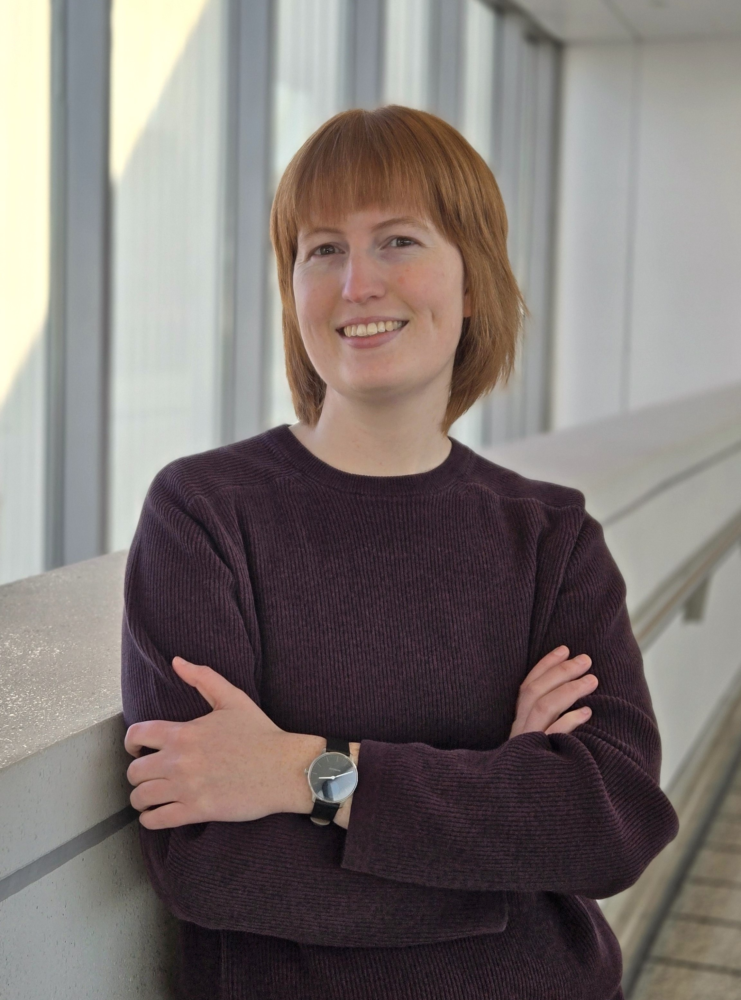

I'm interested in what things mean and how they can mean them. My research focuses on lexical semantics, metaphysics, mereology, philosophy of language, and the syntax-semantics interface. I am particularily interested in the semantics of count and mass nouns. My other research interests include using corpus linguistics for experimental philosophy, philosophy of music, linguistic markers of epistemic uncertainty, writing systems, and internet language and humor.
When I'm not in class or doing research, you can find me making cocktails, baking cakes, playing board games, brewing big pots of tea, birdwatching, and curating my meme collection. I served as the Graduate Student Assocation president for Arts, Sciences, and Engineering at the University of Rochester from 2020-2022 and I also volunteer with the Rochester Mutual Aid Network.
